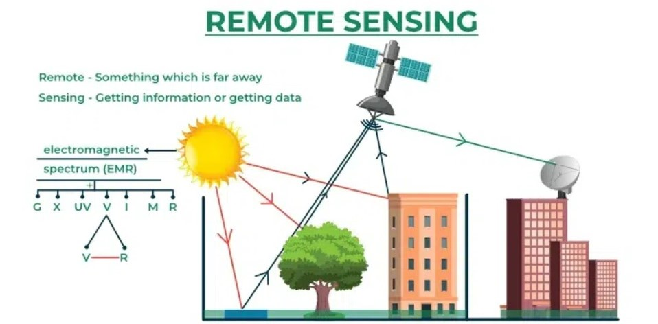
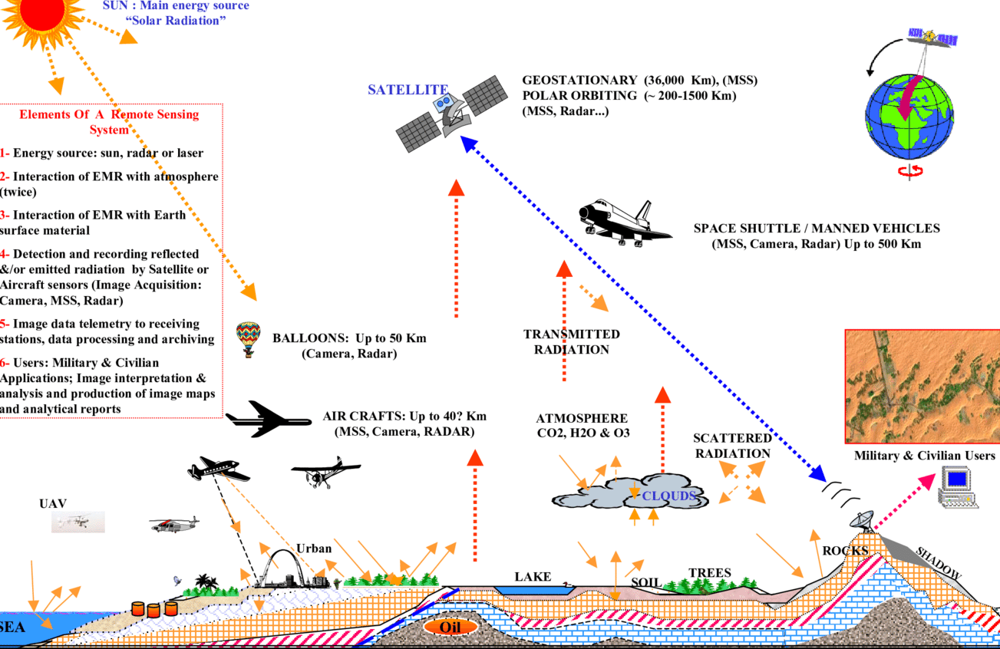
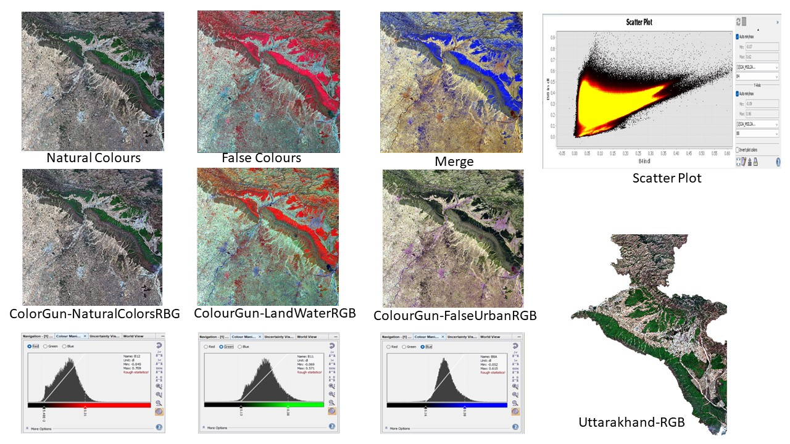

3 Week One: Introduction and Background
The aims of this module will enable to operationalise remotely sensed Earth observation data for informing decisions on environmental hazards arising from a changing climate, specifically in relation to (a) urban areas and (b) future urban sustainability that may help to bring about policies in managing earth’s resources and address the problem of climate change.
3.1 Summary
Recent trend on studies around urban area, green space, access to infrastructure, impact on health & well-being has brought the rise of remote sensing cities and environment. NASA defines remote sensing as acquiring information from a distance, by sensors that are mounted on satellites, planes (aerial imagery), drones, phones, free standing on the ground or sea (with hand held devices) etc. (CASA0023). Today, I learnt of basic term used in optics such as earth observation1, satellite2, Sensors3, electromagnetic spectrum4 (figure-1). Then, we got introduced, how does satellite interact with Earth’s surface and few terms were important. Before this radiation are retrieved by the sensors, the electromagnetic radiation (EMR) (e.g. from the sun) experiences surface and atmospheric changes. The surface changes are when energy gets absorbed by the surface energy being transmitted through the surface. There are below term important to understand such as electromagnetic radiation (EMR) 5, radiant energy6, radiant flux7, incoming short-wave radiation or shortwave radiation8, solar irradiance flux10, exitance (emittance) 11 (per unit time - flux).
Figure-1: Basics of Remote Sensing
(“Remote Sensing - Components, Types, Working and Applications” 2023)
Whereas the atmospheric energy can be scattered by particles in the atmosphere. There are three types of atmospheric scattering are Rayleigh12, Mie13 and Non-selective 14. There are important concepts around SAR15 and data format16 that we will learn in detail in coming weeks. Data formats are of 4 types i.e., Spatial Resolution 17, Spectral Resolution 18, Radiometric Resolution 19 and Temporal Resolution 20. Thus, basic components of remote sensing can be seen in figure-2.
Figure-2: Components of Remote Sensing

Sensors are designed to monitor bands. Different sensors will have different number of bands 21. Spectral Resolution has the number of bands it records data in, example say spectral resolution 1 22. Thus, there exists multiple spectral bands 23 and hyper spectral bands24. It not always satellite can record the bands from space but from ground too known as spectroradiometer25. Additionally, below (figure-3) are few remote sensing imaging tried during this week.
Figure-3: Trying Basics of Remote Sensing for Uttarakhand, India

3.2 Application
In remote sensing basics by (Santosh and Sundaresan 2014) have described procedures and principles to collect data through remotely sensed methods. They have discussed the components of remote sensing for instance electromagnetic radiation, energy transmission, radiance flux, and the scattering of electromagnetic radiation. Further, they have described active and passive satellites for remote sensing. While explaining the electromagnetic radiation as atmosphere window, they say that the regions of atmosphere is significant to develop remote sensing technology. They continuation to emphasis that in order to study any natural process, wavelength region is importation for image identification and classification for remote sensing. Moreover, they explain radiometric processing, image classification, and image interpretation techniques to effectively process and understand remote sensing digital data so as to enrich geo-spatial technology.
In another study on basics of remote sensing, the authors carry a case of hydrocarbon identification (Laake 2022) and details the understanding and application of electromagnetic wave component of spectral band use. Rather than entire process of imaging as in the earlier paper, a brief history of the development, implementation and utilization of remote sensing has been done in the second one. Thus, it aids to emphasis remote sensing driven data collection, processing and analysing that get generated in dynamic natural resource and earth activities. They conclude on basics of electromagnetic waves is function of the atmosphere around and in water and soil along with their impact on the spectra useable for remote sensing. Depending on the need, it may focus on earth surface, landuse or lithological application. In addition, shallow water and hot arid deserts may be done by sub surface mapping in special cases.
3.3 Reflection
Today is day one of our lecture and only know that this lecture is on remote sensing which is something to do with satellites and data. While it has begun, I am stressed as to if this module is gonna be a tough one because I am overwhelmed by my only little knowledge of the term associated with it i.e., “satellite”, “scientists” and most of all “NASA”. It kind of give me a fear of learning as it meant for strong brainiest and brainwaves. The first lecture is over and I feel little better about the above terms as the prof make is quite engaging to understand and breaks it down precisely for my short wavelength. I like the fun facts stated during the lecture for example there are about 27,000 pieces of junks/ waste satellites lying in out in space. What actually resonates mostly for me that in upcoming lectures and practicals one would learn to enable skills that reduces the time of data imaging via use of Google earth engine (GEE) that gives more free resources to process large volumes of data with the advent of cloud computing. With rising demand of earth observation data and analysis there seems potential emergence of policy decisions to make use of remotely sensed data. However, it is filled with jargon that often isn’t as complicated as it sounds. Thus, I look forward to reach the week of GEE but it might be too ambitious for me as of now. So, I am gonna focus week by week.
.footnote[ [1] NASA launched Landsat satellites that changed the method of collecting earth’s landscape data popularly known as remote sensing which interchangeably called as ‘Earth Observation’. [2] Scientist started to get more data and details as the NASA went ahead with launches of satellites from Landsat1 to Landsat8. So far to receive enormous detailed data about earth’s resources and climate, the best has been Landsat8, with more sensitive sensor scientist can retrieve improved accuracy in data that helps to manage the earth’s resources and climate optimally. For example, study to most subtle change is vegetation is possible now with Landsat8. [3] Sensors are mounted on satellites, drones etc. The sensors monitor electromagnetic rays of spectrum. They are of two types. First, passive sensors are those that does not emit energy but uses the energy that is available i.e., sun. Second, active sensors are the once that emit energy. [4] It is around us all the time, without which the world around us would not exist is the Electromagnetic Radiations. These waves spread across from a very short radiations of gamma rays, x-rays, ultra-violate rays, visible-light waves, infrared waves, micro waves, radio waves. It is collectively known as the electromagnetic Spectrum or EMS. [5] Waves of an electromagnetic field, travel through space and carry radiant energy. Waves are part of the EMR spectrum. [6] Energy carried by EMR waves. [7] Energy per unit of time. [8] Energy from the sun. [9] Energy (solar power) from the sun per unit area per unit time (from electromagnetic radiation) [10] Means time here [11] Energy leaving a surface per unit area per unit time [12] Particles are very small compared to the wavelength [13] Particles are the same size compared to the wavelength [14] Particles are much larger than the wavelength [15] Active sensor such as Synthetic Aperture Radar (SAR) can see through clouds. [16] In the majority of cases remotely sensed data is raster. Data format is generally geo.tif. Raster data are stacked vertically in B1, B2, B3 etc.(insert img). LiDAR data points has x, y with the z-dimension to collect attitude and 3D analysis. [17] Spatial resolution has the size of the raster grid per pixel (e.g. 20cm or 30m). One can compare the spatial resolution of 10 by 10 cm vs 1 by 1 km. [18] It means to observe part of spectrum in the window. Spectral Signature is unique signature given to material on earth or its combination shown through a graph. [19] It identifies differences in light or reflectance, in practice this is the range of possible values. The ability of a sensor to identify and show small differences in energy. The higher the resolution, the more sensitive. [20] This is the resolution means the time it revisits (e.g. daily, every 7 days, on demand). Its low resolution means it has a large pixel size (e.g. MODIS is 500m by 500m pixel). [21] specific range of EM spectrum [22] means Bands: range of spectrum, where richer the band, will have more elements to identify. [23] The 7-12 bands [24] 10-25 bands that has continuous spectrum [25] These are pure white reference panels that needs to be calibrated]